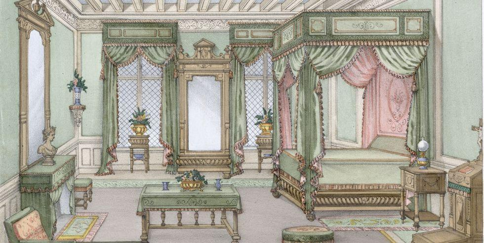
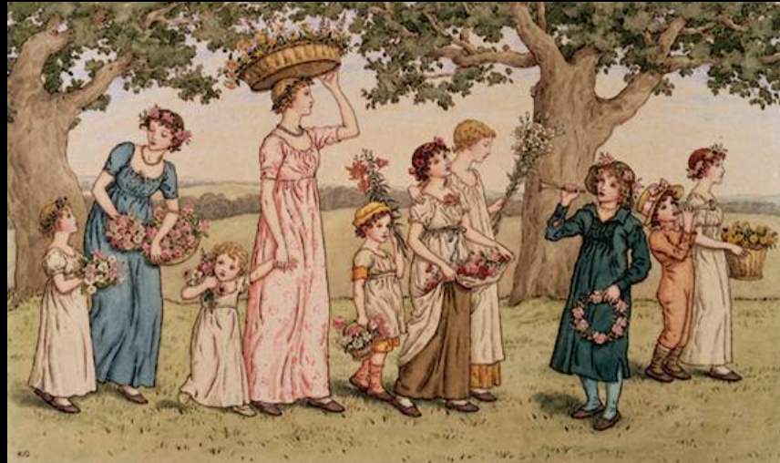
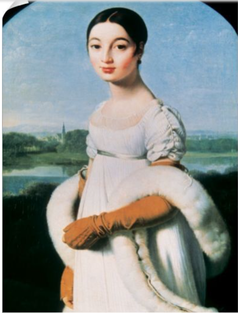
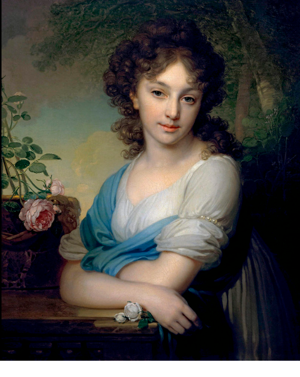
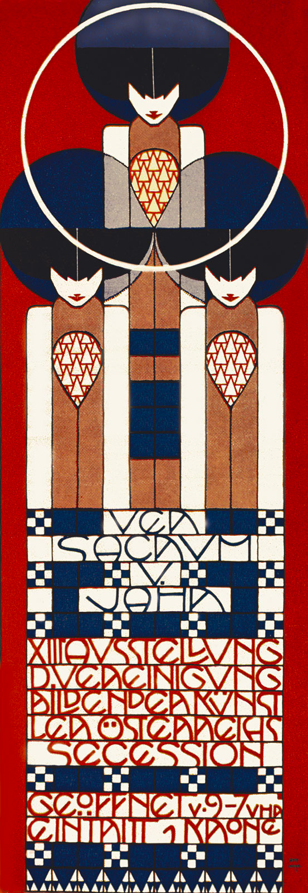
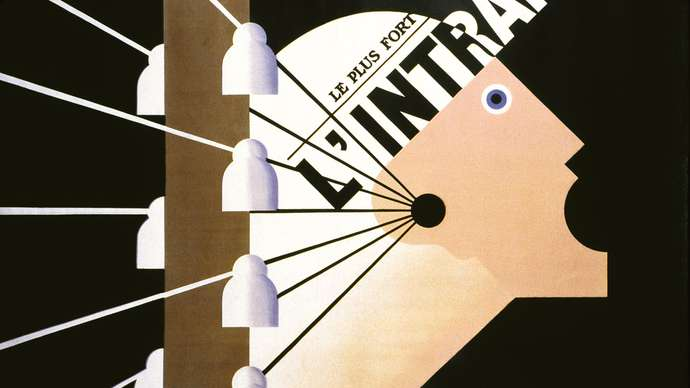
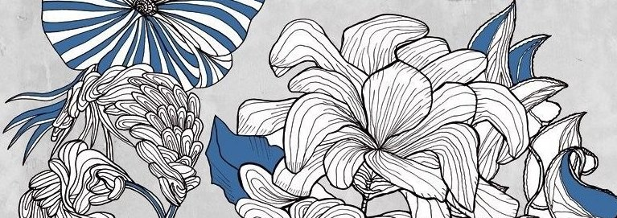
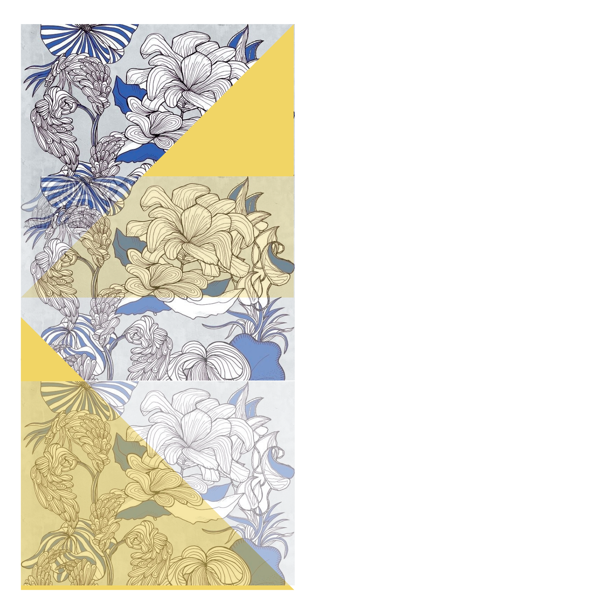
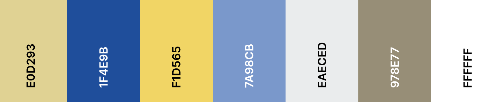
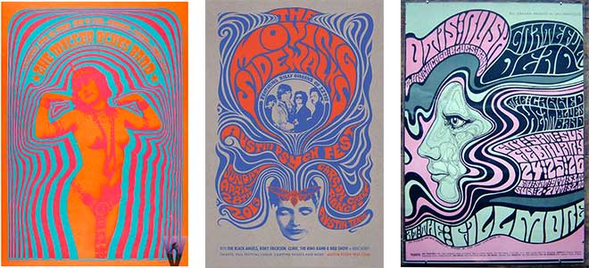

Letter from the Editors
Welcome, Simmers!
Since all the printed copies of our latest issues got sold out immediately as collectors ran to the kiosque to buy them, The Simmer Magazine editorial board has created three SPECIAL online issues based on the printed magazines.
Why are these issues SPECIAL?
- Each issue focuses on a specific topic to make sure you learn everything about The Sims! Try browsing the data viewer on the left to discover interesting connections!
- Are you a future-loving Simmer? Are you more like a Victorian lady? No problem! You can switch between historical typographical styles, hope you’ll find your favourite that suits you the most!
We hope you’ll enjoy our special edition that we created with love.
Wishing you a great time on The Simmer Magazine Online,
The Editors of The Simmer Magazine
Documentation
The Simmer Magazine examines the role of the popular video game from different points of view. The three issues focus on how The Sims is connected to psychology, custom content creation and society.
The Magazine is based on a specific concept called Leisurely Luscious Literary Lens.
The table below summarizes the concept and its implementation in our project.
| LLLL | The Simmer |
|---|---|
| Leisure: trivia, silly and funny aspects. | The Sims games are not only the topic of the issues, but we created our own avatars and the magazine covers using the game and included illustrations that match the theme. The letter from the editors creates a story around the Magazine while it also helps the user understand the main features of the site. |
| Luscious: interesting, rich comparisons. | The articles contain abundant information about people, places and concepts. Moreover, they focus on differnt aspects of how the game influences psychology, society and content creation. |
| Literary: possibility of analysis | All the information can be easily read and searched through the metadata viewer widget to allow interpretation. |
| Lens: possibility of evaluation, side-by-side comparison | The issues are divided based on their main topic but they are all connected by the focus of the magazine, The Sims video games. The metadata viewer, the magazine covers, and the table of contents allow the user to explore connections and deepen their knowledge about the topic. |
The website enables the user to explore the issues of the magazine which are positioned at a central place for visibility. The user can switch between the articles in different historical typographical styles, namely Regency (before 1800), Victorian (XIX century), Art Nouveau (first half of XX century), Psychedelic (second half of XX century), Grunge (late XX century, beginning of XXI century), and Futuristic (2030s) styles and an additional default style, using the navigation bar.
Neoclassical and Regency graphic design
A purity of form with sparse pages, generous margins and line-spacing, and severe geometric types; this functional purity avoided any distractions from the act of reading.
Source
Second half of the 18th century, the designers took inspiration from Classical art. This interest was inspired by the archaeological finds in sites situated in places such as Greece, Italy and Egypt. John Baskerville, an english designer of that period, defined the shapes of neoclassical typography: the fonts had sharper serifs and more contrast between thick-and-thin strokes than Rococo typefaces, and his letters had a more vertical, geometric axis.
 In Italy, in late 18th century/early 19th century, Giambattista Bodoni, a printer that worked at the Royal Press of Parma, published the Manuale Tipografico (1788), in which he declared his design statements and ideals on Neoclassicism. Bodoni drew inspiration from Baskerville as he evolved his preferences from Rococo-derived designs toward modern typefaces. He achieved a purity of form with sparse pages, generous margins and line-spacing, and severe geometric types; this functional purity avoided any distractions from the act of reading.
Also the books designed by the Didot family of printers in France, shared the same purity: minimal decoration, generous margins, and simple linear borders.
Thus, the font-family used are, in fact Bodoni and Baskerville, the shapes are regular, straight, the margins and the padding are generous and the serifs are sharp. The background color, a gentle light green, reminds the color of the wallpaper used in Regency and Neoclassical villas and palaces.
 Victorian Typography
19th century
The distinctive Victorian style of layout – extreme variations of type size and weight crammed within the page format was an invention of expedience, allowing the printer to utilize every inch of precious space.
Source
Background
XIX century Industrial revolution and technical inventions have revolutionized printing and press with the appearance of the Lynotype and the Monotype machines. The Daily Telegraph, published since 1855, is an important newspaper in the Victorian era. As advertising became more wide-spread, large-scale, extra-bold fonts have become more popular for headlines and titles.
Layout and typographical characteristics
Victorian-era newspapers were black and white and usually had a broadsheet format with six or seven columns of text printed in narrow fonts. Cross-headings, brief paragraphs, informative headlines, vivid illustrations, attractive design, better format and newsprint, larger type and greater use of the front page for font have become more wide-spread.
Typefaces
Didone typefaces such as the Didot and Bodoni font families are the most recognizable fonts from the 19th century. Fat Face was created in the 19th century as well; it resembles the Bodoni font family, however it is considerably bolder, attracting the gaze of the reader on the headline. Narrow and extra-narrow typefaces were popular in print as their use allowed them to fit more content on a page.
Inspiration
The Daily Telegraph quickly became one of the most popular newspapers after it was first published in 1855. Browsing the Telegraph archive, the articles from the Victorian era bear all the characteristics of the 19th newspaper typography and layout. The articles are divided into at least three or four columns and the narrow fonts fill the whole page, leaving only small margins. The pages are black, brown and white and from 1855 we can find hand-drawn illustrations that were not necessarily used for aesthetics but for practical reasons such as the first drawing to appear in the newspaper which shows a murder suspect to facilitate police investigation.
Considerations
I tried to recreate a historically accurate effect while working on the CSS. The margins are set to 0 to reflect the narrow margins of the newspapers. The aspect ratio is set to 1.255% based on the British broadsheet size that they used to print newspapers. The headings are set using the Abril Fatface font based on the Victorian trend of using fat fonts for emphasis. The text is set using the Antic Didone font, which is a historic and narrow font as I have mentioned above. Simple, black lines divide the title and the article, as it is seen in the example pages from the XIX century. An initial drop cap letter illustrates the articles as it was customary during history. The background color is a black-brown-tan-white gradient that I obtained using a color picker on the scanned newspaper pages. Since images were not often used in newspapers in that era, I've added a sepia filter to them. The filter makes them resemble hand-drawn illustrations from the Victorian era.


Sources
- A brief history of typefaces
- A History of Typeface Styles & Type Classification
- British Newspapers 1860-1900
- History of Layout Design and Modern Newspaper & Magazins>
- The Telegraph Historical Archive 1855–2016
- Typography - History of typography
- Victorian Era Newspapers: Various sections, Layouts and Templates
- Vintage Fonts: The Best Vintage Fonts by Historical Era
First half of 20th century - Background
-We all have a different personality, character. Now all the letters have individuality, charisma and personality.-
In the first half of the 20th century, with the emergence of new aesthetic trends in the world and, in other words, the advantages of mechanical developments, the understanding of design gained a new dimension. With modernism, which emerged as a reaction to the revival of the concept of craft and mechanization, which lost its value in the industrial revolution, and increased its influence in the middle of the 20th century, new concepts in the field of design emerge. The “Art and Craft” movement can be seen as the beginning of modern art in this period. “The artists of the 20th century had to discover something. To get attention, great artists of the past had to do something that had never been tried before, instead of trying to achieve their admirable mastery” (Gombrich 2004, p.563) In 1897, a group of young artists led by Gustav Klimt in Austria created the Vienna Secession, breaking away from the Künstlerhaus. These artists and architects eschewed academic conventions in favor of innovative ways of expressing themselve Red, blue, and white flat shapes are defined by horizontal, vertical, and circular lines.
Every movement in the first half of the 20th century has created the characteristic typography of this period. For example in Germany Peter Behrens played major role in design and typography. Behrens’s work for AEG was a forerunner of a major area of graphic design in the second half of the 20th century. He led the creation of a corporate identity through a program using trademarks, typefaces, formats, and color in a consistent, controlled manner.
We see that Cassandre uses modulated color planes derived from figurative geometry and Cubism in his poster designs. Cassandre has also used airbrushed mixes to soften hard geometry. The hardness of the lines softens with the color palette used.
Art Nouveau and Geometric shapes
The ornate Art Nouveau design style first appeared in late-nineteenth-century France and quickly spread throughout Europe, with the style being used in art, architecture, posters, jewelry, furniture, and textiles.
Toward the close of the nineteenth century, some artists felt constrained by the long-established ‘academic art' approach. Initially, a few painters in France broke away from the previous academic style's rigors and began to make art that explored organic, highly ornate shapes in a more stylized and sensual way.
When the minimalist lines of modernism combined with art nouveau, a great trend emerged.
Art Nouveau is a maximalist design style, so aim to fill any white space on your layout with decorative elements like borders, frames, and dividers.
To recap, authentic Art Nouveau graphic art and illustration
is defined by:
organic, curved lines and graphics, inspired by natural
forms like plants and flowers
symmetrical layouts and heavy embellishment
earthy, nature-inspired colours
romantic, often female, subjects, inspired by classical
mythology
hand-drawn, rounded typography, which is often placed inside
decorative banners or
borders
Color Palette of 1930's style
Typography
Oranienbaum
The font Oranienbaum, is a modern high contrast Antiqua with
well-defined, recognizable
features. Based on the architecture of classic Antiqua
fonts, such as Bodoni, Oranienbaum
is typical of the typefaces from the first quarter of the
20th century: pronounced serifs,
contrasting geometry, and an interplay of right angles and
flowing lines. The font is well
suited for both headlines and body text. It is one of the
fonts that go best with the Art
Nouveau style.
It was designed through a collaboration
of Oleg Pospelov as the main
type designer, with Jovanny Lemonad as art director,
technical engineer and publisher.
Josefin Sans
The idea of this typeface is to be geometric, elegant, with a vintage feeling, for use at larger sizes. It is inspired by geometric sans serif designs from the 1920s. The x-height is half way from baseline to cap height, an unusual proportion.
Smart Frocks NF Regular
Reminiscent of 1920s London window style, this font is combined with Art Nouveau.
Sources
Second half XX century -psychedelic style
Consider some of the primary attributes of psychedelic art: fantastic subject matter, kaleidoscopic and spiral patterns, bright color, extreme detail, groovy typography.
Source
The psychedelic movement is one of the most indicative movements developed in the second half of the XX century. It started in the mid 1960’s and had an effect on many aspects of popular culture. The term “psychedelic” refers to drugs that were popular with the youth culture of the time. This movement influenced not only art and music, but also the style of dressing, literature and philosophy. The posters of the rock concerts can visually express at best the feeling of tripping out. The visual motifs of psychedelic art include Art Nouveau-inspired curvilinear shapes, illegible hand-drawn type, and intense optical colour vibration inspired by the pop art movement.
Use of abstracted curvilinear shapes, clashing colours, hard-to-read fonts. Rarely used in today’s designs, the trippy posters of the 60's are the most easily recognizable contribution of the Psychedelic style.
The colors used are flash, intense and hard-to-read, as the curvilinear fonts used: namely Sigmar One, and RocknRoll One, which recalls at best the calligraphy and fonts used in 60’s psychedelic posters.
To Recap, the main characteristics of the Psychedelic graphic design style are…
- influenced by the prevalence of hallucinatory drugs
- featuring abstract swirls of intense color
- curvilinear calligraphy reminiscent of Art Nouveau
- intense optical colour vibration
GRUNGE TYPOGRAPHY
end of 20th century - beginning of 21th century
Things were messy then. And type design was messy, too. Words were splayed and chaotic, letters blurred. Textures were thick and heavy. Concert posters looked like someone had splattered paint on paper and then scratched out band names.
Source
Background
The end of the 20th century brought about substantial changes
in typography and graphic
design. First, the launch of the first Macintosh computer in
1980 has led to the creation
of postscript and pixel-based fonts with the aim of
resolving typographical problems that
arose during the transition to digital. Second, as graphic
designer Paul Rand has
expressed the importance of aesthetics in graphic design,
the importance of both function
and form have become the main approach in present days:
design should be both beautiful
and functional
.
Typographical characteristics
Postscript was created to overcome problems that arose during printing by creating a bitmap of the letters. Compared to traditional typefaces, these letters appear LARGER, have an INCREASED X-HEIGHT. Smaller case letters appear more rounded and open. Many graphic designers have shaped the typographical trends of the era that constitute the basis of postmodern typefaces. Dutch typographer, Wim Crouwel paired extreme, particular fonts (e.g. for headings) with easily-readable SANS SERIF fonts, which have become common practice. DRAMATIC TYPOGRAPHY has become a characteristic of postmodern typography and it includes the pairing of fun, unique fonts with easily-readable sans serif fonts and/or increasing/decreasing FONT SIZE and POPS OF COLOR. He also experimented with the GRID system which had already gained popularity in the previous decades as it is the basic element of the Swiss Design style. GRID SYSTEMS along with clear GEOMETRICAL FORMS have gained popularity that match the MINIMALISM that define this era. Along with minimalism, form and functionality, another important principle is THE USE OF WHITESPACE. Vector illustrations, icons and textures are used to decorate this space.
Typefaces
The 90s and the early 2000s brought about the popularity of simple, easily readable sans serif fonts such as FUTURA, GOTHAM, AKKURAT AND CIRCULAR. REPLICA is another example notable for the fact that an intrical digital grid was developed for this font. Another minimalistic font is SAN FRANCISCO designed by Apple. Experimental fonts are used for headlines, titles, and subtitles. LO-RES family fonts were designed for Macintosh and are often used to create a computer-code like effect, even in printing.
Layout
Typical solutions for layout include the text being divided into different columns, the use of small margins, different font sizes and using bold, italic types and different colors for emphasis.
Inspiration
Graphic designer David Carson is the father of the so-called Grunge Typography originated in the 80s and 90s with the introduction of the Macintosh computer and characterized by the extensive use of dingbat fonts, strong, bold, and code-like fonts. The layout of the pages is often asymmetrical and experimental. Pages and fonts often appear dirty and stained with the occasional use of bold, vivid colors such as red and yellow. Vector illustrations, artistic photography are often used to create a particular effect.The style was popular in the music industry as it was used for album covers and concert announcements. Carson’s Ray Gun magazine has become the most iconic example of Grunge Typography.
Considerations
Grunge typography is a symbol of everything goes
which
gave me plenty of space to
experiment with the layout and the fonts.The use of the grid
system, however, is almost
compulsory, as it is a common practice in modern and
postmodern graphic design. After
creating the grid, I've placed the content in a
chaotic
way since it is a
characteristic of this style. I've set the right and top
borders black to create an
unusual, assymetric effect.
I've used a variety of fonts, including a textured experimental font called Gesso (image 1) for headings and a code/typewriter-like font called Latin Modern Mono (image 2) to emphasize information. For the main text, I have used Gill Sans (image 3), a well-known font originally designed for the London Tube. As the use of urban-style elements are characteristics of Grunge typography, Gill Sans is a great match for this style.


The articles are split into columns and decorated with an extra bold red margin on the bottom. I've created a plumbob shape in Photoshop which is similar to the often hand-drawn illustrations found in these magazines. This style is characterised by the occassional use of color apart from black, grey, and white, therefore I've only used red to pop out from the context.


Sources
- Angst, imagination, and the Ray Gun Effect: a history of grunge typography
- Design: 2010-2019: A decade in typography - CBA Italy
- Lines of Communication – A Typeface History (with Infographic)
- Ray Gun Magazine,copertine di Chris Ashworth – Design Playground
- Typography Inspiration in 21st-Century: Social and Cultural Roles of Modernist Bauhaus in Graphic Design
- Typography: late 20th century by Fei3 - issuu
2030 - The Future
~Progress will only be made if the digital aspires to be its own entity rather than a carbon copy of the physical, utilizing its own distinct characteristics.~
Despite the fact that letterforms compose every word we type and every sentence we make, they are frequently neglected. Almost everything we see, touch, read, buy, or sell contains typography. They are calligraphic hybrids with traces from ancient runes to Latin verse, the consequence of hundreds of years of discovery, discussion, and delegation.
With the advancement of technology came the variable fonts we see today. These digital fonts come in an infinite number of typographic variations within a single font file, so you can adjust the width, height, angle and weight of the letterforms as you wish.
The green color was chosen since it is expected that environmental concern would become more important in the future.Green color refers to efforts that in the production and marketing of products and services cause less harm to the environment. Furthermore, The Simmer Magazine's concept is the development of hues such as green, pink, and light yellow. The simplicity of futuristic design is combined with startling shapes. The broad attractiveness of a minimalist appearance is unmistakable.
Typography
In the futuristic view, it is aimed to place the text in the
middle of the page to ensure
full readability of the user. This means focusing on the
vertical dimension to wrap the
text.
Therefore, the header is placed with 40px padding. Secondly,
the conspicuousness of the initials draws attention to the
capitalization of the old newspapers and magazines.
In the content, a very minimalist and clear visual that
increases readability was created
by leaving long spaces between paragraphs. The text only
takes up 40% of the area; and long spaces between paragraphs are
provided. Due to social media such
as Twitter and Facebook, users have become accustomed to
short texts. Readers may find
long texts boring and time-consuming. Long spaces between
paragraphs are aimed at making
the reader read the text to the end without intimidating it.
Neogrey Regular Font, AlexandriaFLF Regular (Various, Sans Serif)
The popular, electronic look of the Neogrey regular font
reflects a futuristic look. This
font was used only when naming the author on the subhead
background. It was prioritized
that the reader should not have difficulty in reading the
text. Neogrey font created a
full reflection of the future with capital
letters.
>Moreover, it is believed that
simplicity will never change after 10 years, and Alexandria
flf regular font was used for
the content by us.
Sources
We have used general html tags for the markup of the articles in order to create coherence between our work and to make the CSS markup unified. The elements we used are the main elements that appear in all of the articles: headings, paragraphs, quotes, links, tables, images. We have divided the articles into four main classes: header containing the title and additional information, subhead containing the subtitle and additional information, content containing the article itself and footer containing additional information.
The metadata viewer is hidden by default, so the articles can be read in full width. By clicking on the show metadata button, the metadata viewer widget appears on the left side and the container of the articles becomes smaller. The user is now able to browse the metadata information related to people, places and concepts in each article. When the user navigates to another article, the metadata content changes accordingly. The people, places and contents tab contains the name of the related person, place, or concept; an optional description and a link to the relevant Wikipedia or social media pages.
Disclaimer
The Simmer Magazine is an end-of-course project for the Information Modelling and Web Technologies course held by Professor Fabio Vitali within the Digital Humanities and Digital Knowledge Master’s course at the University of Bologna.
The aim of this project is to apply typographic and layout styles on text documents. The criteria for selecting documents are their length and complexity. They are not an alternative for or a replacement of their original locations:
- EA’s Laura Miele: Making games is hard, and it keeps changing
- For a Community of Gamers, The Sims Is a Gateway to Architecture
- Inside the World of Young Black Sims Content Creators
- My land of make believe: life after The Sims
- Self-Portrayal in a Simulated Life: Projecting Personality and Values in The Sims 2
- 'The Sims' Made Me Realize I'm Ready for More In Life
- 'The Sims' turns 20: Why the social simulation game is more culturally relevant than ever
- The Sims: Suburban Rhapsody
& All copyrights and related rights on the content remain with their original owners. All copyright and layout choices are 2021 Creative Commons Licence.
Contacts
Take a look at our Github Repository
or check out the Digital Humanities and Digital Knowledge programme website.